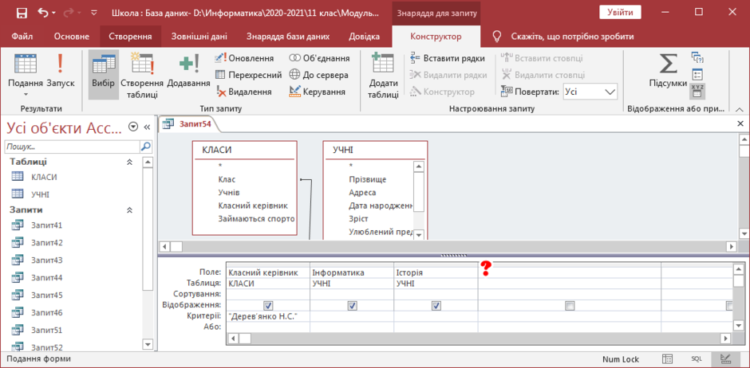

Функції для аналізу даних
Функції дозволяють виконувати підрахунки, підсумки або інші обчислення прямо в базі даних. Вони є незамінним інструментом для аналізу та обробки великих обсягів даних.
- SUM: Обчислює суму значень у колонці.
- AVG: Знаходить середнє значення.
- COUNT: Рахує кількість записів.
- MAX/MIN: Повертає максимальне або мінімальне значення.
Приклади функцій
Ось кілька прикладів використання функцій у SQL-запитах:
-- Знайти загальну зарплату співробітників
SELECT SUM(зарплата) AS Загальна_зарплата FROM співробітники;
-- Розрахувати середню зарплату співробітників
SELECT AVG(зарплата) AS Середня_зарплата FROM співробітники;
-- Порахувати кількість співробітників
SELECT COUNT(*) AS Кількість_співробітників FROM співробітники;
-- Знайти найвищу зарплату
SELECT MAX(зарплата) AS Найвища_зарплата FROM співробітники;
-- Знайти найнижчу зарплату
SELECT MIN(зарплата) AS Найнижча_зарплата FROM співробітники;
Інтерактивна таблиця результатів
Уявімо, що є таблиця "співробітники". Результати деяких функцій можуть виглядати так:
| Функція | Результат |
|---|---|
| SUM(зарплата) | 250,000 грн |
| AVG(зарплата) | 25,000 грн |
| COUNT(*) | 10 співробітників |
| MAX(зарплата) | 50,000 грн |
| MIN(зарплата) | 15,000 грн |
Відеоурок
Дізнайтеся, як ефективно використовувати функції у ваших запитах:
Зображення
Схема, яка демонструє використання функцій:
Тестування запитів
Спробуйте виконати свій запит:
FAQ
Що таке агрегатні функції?
Агрегатні функції — це функції, які виконують обчислення над групою значень і повертають єдине значення, наприклад, SUM, AVG, COUNT, MAX, MIN.
Чи можна використовувати кілька функцій одночасно?
Так, ви можете комбінувати функції, наприклад, для розрахунку середнього значення після відбору даних за умовою.